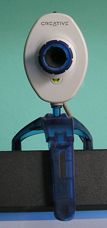

Periféricos¶
Los periféricos son dispositivos que permiten que la información entre y salga de un ordenador.
Los periféricos de entrada son como los sentidos de un ordenador. Recogen información del exterior para que el ordenador pueda 'ver' con una cámara, 'oír' con un micrófono, o 'sentir' la posición de la mano del usuario con un ratón.
Los periféricos de salida son como los músculos del ordenador, que le permiten exteriorizar la información que tiene en su interior. Así, gracias a los periféricos de salida, podemos ver la información del ordenador en forma de imágenes en un monitor, impresas en una hoja por una impresora, en forma de sonidos de un altavoz, o de vibración de un smartphone.
Índice de contenidos:
Clasificación de los periféricos¶
- Periféricos de entrada
- Periféricos de salida
- Periféricos de entrada/salida
Periféricos de entrada¶
Son dispositivos que permiten al ordenador obtener información del exterior, a través de sensores y de interfaces de usuario de entrada de datos.
- Ratón
El ratón o mouse es un dispositivo que se utiliza para manejar con una mano un puntero en un entorno gráfico de ordenador.
El ratón detecta los movimientos en dos dimensiones sobre una superficie plana en la que se apoya. Un puntero o flecha en la pantalla del ordenador muestra los movimientos del ratón.
El ratón también suele tener varios pulsadores y una rueda que se puede girar, para interactuar con las pantallas del entorno gráfico.
Pese a la aparición de nuevas tecnologías, como la pantalla táctil, el ratón aún sigue siendo muy utilizado.
- Teclado
El teclado es uno de los primeros dispositivos de entrada al ordenador que han existido. Está inspirado en el teclado de las máquinas de escribir, con configuración de teclas QWERTY.
El teclado es casi imprescindible para poder escribir texto en un ordenador. A pesar de la desarrollo de nuevas tecnologías, como el reconocimiento de voz en los teléfonos inteligentes, aún sigue siendo muy utilizado el teclado en pantalla.
El teclado estándar de ordenador es de 102 teclas en Europa y se dividen en los siguientes grupos.
- Bloque de funciones F1 a F12.
- Bloque alfanumérico con números del 0 al 9, letras y algunas teclas especiales como el tabulador, espaciador, enter, etc.
- Bloque especial con teclas de dirección y otras como inicio, fin, suprimir, insertar, imprimir pantalla, etc.
- Bloque numérico a la derecha, con los números y las operaciones básicas +, -, *, /.
- Escáner
El escáner es un periférico de entrada que se utiliza para realizar fotografías digitales de documentos, diapositivas o transparencias.
La resolución mínima recomendada es de 150dpi (puntos por pulgada). Aunque los escáner actuales pueden llegar con facilidad a resoluciones de 600dpi o mayores, esto genera archivos de datos mayores de lo necesario.
Los escáneres se pueden combinar con técnicas de OCR o Reconocimiento Óptico de Caracteres para poder transformar un texto en formato imagen a un texto digitalizado.
- Cámara web
La cámara web , en inglés webcam, es una pequeña cámara digital conectada al ordenador con la que se puede capturar imágenes fijas y vídeo (imagen en movimiento) para transmitirlos a distancia por Internet.
Desde el comienzo de los confinamientos en 2020 con motivo de la pandemia COVID, se han popularizado mucho las videoconferencias para realizar reuniones mediante servicios como Zoom, WhatsApp, Microsoft Teams, Google Meet, Skype, Webex, etc.
Cámara web externa.¶
Entereczek, CC BY-SA 3.0, via Wikimedia Commons.- Micrófono
El micrófono es un dispositivo que recoge el sonido del ambiente y lo traduce a señales eléctricas. Posteriormente una Tarjeta de sonido traduce estas señales eléctricas a señales digitales que puede utilizar el ordenador.
En algunos casos, los micrófonos de las cámaras web, de los ordenadores portátiles o de los smartphones llevan ya incluido un conversor analógico-digital para convertir las señales eléctricas que salen del micrófono a señales digitales, pero en estos casos suelen tener menor calidad que cuando se utiliza un micrófono y una tarjeta de sonido dedicados.
Según la tecnología de los micrófonos, estos puede ser magneto-dinámicos, de condensador, de carbón o piezoeléctricos.

Micrófono magneto-dinámico de marca Sennheiser.¶
ChrisEngelsma, CC BY-SA 3.0, via Wikimedia Commons.- Tableta gráfica
La tableta gráfica o tableta digitalizadora es un periférico que permite al usuario introducir gráficos o dibujos a mano, tal como lo haría con un lápiz y papel. También permite apuntar y señalar los objetos que se encuentran en la pantalla del ordenador.
Consiste en una superficie plana sobre la que el usuario puede dibujar una imagen utilizando el estilete (lapicero) que viene junto a la tableta. Dependiendo de la tableta, la imagen puede aparecer en la tableta y en el ordenador a la vez o aparecer solo en el ordenador.
- GPS
El GPS o Sistema de Posicionamiento Global es un sistema del departamento de defensa de Estados Unidos que utiliza satélites artificiales que envían señales de radio, para localizar un receptor en cualquier posición del globo terráqueo con una precisión de pocos metros. Sistemas semejantes son el sistema Galileo de Europa o el sistema Glonass de Rusia.
El GPS es ampliamente utilizado en los teléfonos inteligentes así como en dispositivos weareables. Permite dar servicios como la navegación punto a punto, localización de amigos cercanos, cálculo de recorridos para runners, etc.
La localización de una persona es una información que las grandes corporaciones consideran muy valiosa. Dónde vives, qué lugares y qué personas frecuentas, a qué hora sales de casa o del trabajo, en qué vehículos te mueves, etc. Toda esta información se puede deducir de la localización GPS y es especialmente sensible y privada, por lo que debemos restringir el uso del GPS a los momentos y aplicaciones que consideremos imprescindibles.
- Acelerómetro
El acelerómetro es un sensor capaz de medir aceleraciones. Está integrado en los smartphones, pulseras de actividad física, mandos de videoconsolas, etc.
Este sensor puede detectar el movimiento que realizamos cuando andamos, corremos o cuando movemos los brazos en varias direcciones. En combinación con el giroscopio permite conocer los movimientos que realizamos con gran precisión.
Estos sensores sirven para realizar juegos de baile en los que el mando sabe dónde está nuestra mano y cómo la movemos. También permite conocer cómo andamos o corremos y predecir el consumo de energía realizado o incluso, en aplicaciones médicas, para predecir la aparición de Alzheimer.
Otra aplicación del acelerómetro es conocer dónde se encuentra el suelo (por la aceleración de la gravedad) y, a partir de esta información, girar las fotografías que se tomen para que siempre se muestren hacia arriba.
- Giroscopio
- El giroscopio es un sensor que sirve para conocer la orientación en el espacio de un objeto. Está integrado en los smartphones, pulseras de actividad física, mandos de videoconsolas, etc. En combinación con el acelerómetro permite conocer con mucha precisión qué movimientos realizamos.
- Magnetómetro
- El magnetómetro es un sensor de campo magnético. Como la Tierra tiene un campo magnético, con el magnetómetro que incluye un smartphone se puede situar el norte como lo hace una brújula.
- Termómetro de batería
- El termómetro de la batería sirve para conocer la temperatura que tiene la batería del teléfono inteligente. A partir de esta información podemos conocer el uso que estamos dando al smartphone porque un mayor uso se traduce en una mayor temperatura de la batería. También podemos conocer si se está cargando el teléfono o, de forma indirecta, la temperatura ambiente.


Periféricos de salida¶
Son dispositivos que permiten que la información del ordenador se muestre al exterior.
- Monitor
El monitor de ordenador también llamado pantalla, es uno de los principales dispositivos de salida del ordenador para mostrar información al usuario. También puede considerarse un periférico de entrada si es táctil.
La tecnología que predomina actualmente es la de las pantallas planas de cristal líquido (LDC) y están comenzando a usarse cada vez con mayor frecuencia las pantallas OLED o AMOLED.
El tamaño de un monitor se mide en pulgadas de la diagonal de la pantalla visualizadora (sin el marco exterior). Tamaños típicos son desde las 5" de los smartphones hasta las 24" de un monitor típico de PC.
La resolución mínima de un monitor de ordenador hoy en día debería ser de Full HD (1920x1080 pixel), aunque los portátiles más pequeños, tabletas y smartphones con frecuencia no llegan a esa resolución. WXGA es una resolución estándar algo menor con 1366x768 pixel.
El pixel es el punto más pequeño que se puede representar en un monitor.
- Proyector de vídeo
El proyector de vídeo o cañón proyector es un aparato óptico que proyecta una imagen fija o en movimiento sobre una pared o una pantalla de proyección, a partir de una señal de vídeo que procede de un ordenador. Esto permite visualizar la información del ordenador para todo un auditorio como lo hace una pantalla de cine.
- Impresora
La impresora es un periférico de salida que permite imprimir textos y gráficos en papel de manera permanente.
Las tres tecnologías más usuales son la tecnología láser con tóner, la tecnología de inyección de tinta y la tecnología térmica utilizada para imprimir los tickets de compra.
- DAC
El DAC o conversor digital a analógico es un periférico de salida que permite convertir los archivos digitales del ordenador en música o sonido analógico con alta fidelidad, mayor que la de una simple tarjeta de sonido de ordenador.
- Altavoces
Los altavoces para ordenador van acompañados normalmente de un amplificador de sonido para aumentar el nivel de la señal de salida del ordenador y producir sonidos de alto volumen.
Normalmente se utilizan sistemas estéreo con dos altavoces, uno derecho y otro izquierdo, pero también se pueden utilizar sistemas de sonido envolvente 5.1 si el archivo original de audio/vídeo y la tarjeta de sonido lo permiten.
- Pilotos luminosos LED
Los pilotos luminosos LED son pequeñas luces que informan de los estados del ordenador. Las cajas de ordenador y los teclados suelen tener pilotos LED para avisar de que el ordenador está encendido, que el disco duro está funcionando, que se está produciendo la carga de la batería o que se ha activado el teclado numérico.
- Motor de vibración
El motor de vibración se utiliza en los smartphones para indicar un evento de forma silenciosa. De esta manera, el motor puede informar de una llamada entrante o que ha llegado un nuevo mensaje con un nivel de ruido muy bajo.
- Línea braille
La línea braille es un periférico de salida que transforma texto del ordenador en una serie de puntos braille para que las personas con discapacidad visual puedan leer en ella.


Periféricos de entrada/salida¶
Estos periféricos agrupan varios dispositivos en uno y permiten tanto la entrada como la salida de datos del ordenador.
- Pantalla táctil
La pantalla táctil es una pantalla informática que tiene detectores que permiten conocer la posición del dedo cuando toca o cuando se desplaza sobre su superficie. Esto hace que la pantalla sea interactiva y permite tanto la salida como la entrada de datos.
Con la pantalla táctil se pueden dar órdenes a un dispositivo.
- Impresora multifunción
La impresora multifunción es una combinación de impresora con escáner, por lo que permite la entrada y la salida de datos. Estas dos funciones le permiten actuar como una fotocopiadora o como un fax.
- Casco de realidad virtual
El casco de realidad virtual también llamado gafas de realidad virtual, es un dispositivo que permite reproducir imágenes creadas por ordenador sobre una pantalla muy cercana a los ojos, por lo que las imágenes parecen mucho mayores que las de las pantallas normales. También se reproduce sonido estéreo por los auriculares incorporados.
El casco de realidad virtual tiene sensores de posición y movimiento que permiten conocer dónde mira el usuario, para acompasar las imágenes presentadas a los movimientos de cabeza, de manera que al usuario le parece encontrarse inmerso en la realidad virtual que muestra el dispositivo.
- Tarjeta de sonido
La tarjeta de sonido es un dispositivo de entrada / salida que traduce entre señales analógicas y señales digitales.
Las señales de entrada al ordenador desde un micrófono, desde una guitarra eléctrica o desde un reproductor de sonido son analógicas. La tarjeta de sonido transforma estas entradas analógicas mediante un ADC en señales digitales que pueden ser procesadas por el ordenador.
Cuando queremos que el ordenador reproduzca un sonido, es necesario convertir las señales digitales del ordenador en señales analógicas que pueden amplificarse y enviarse a unos altavoces. La tarjeta de sonido tiene un DAC que realiza esta conversión de señales digitales a señales analógicas.
Vídeo: Explicación de Jaime Altozano sobre las tarjetas de sonido.

{kind=link}
{kind=link}
{kind=link}
{kind=link}
{kind=link}
{kind=link}
{kind=link}
{kind=link}
{kind=link}
{kind=link}